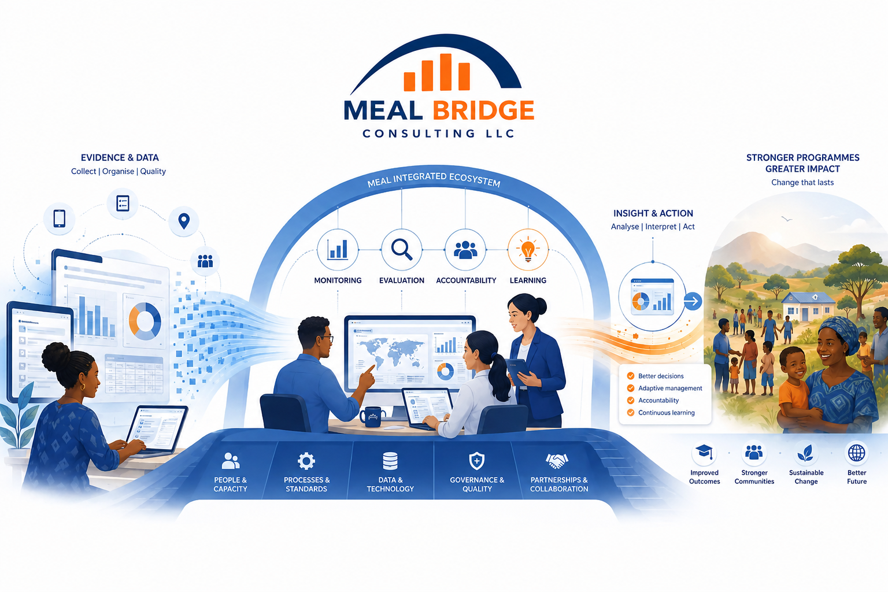

01
Consultancy
Technical advice and hands-on implementation that turn MEAL standards into systems teams can actually use.
- MEAL system design
- Monitoring, evaluation & accountability
- Assessments, research & TPM
We help mission-driven organizations turn evidence, accountability, learning, and technology into stronger programmes and sustainable institutional capability.

Designed for organizations creating public and social value
MEAL challenges rarely sit in one department. Our three divisions work together so advice, technology, and capacity development reinforce each other.
Technical advice and hands-on implementation that turn MEAL standards into systems teams can actually use.
Digital infrastructure, data workflows, and decision tools designed around operational realities—not technology for its own sake.
Applied learning pathways that build professional competence, organizational capability, and confident MEAL leadership.

We look beyond individual tools. The real value comes from connecting data, people, governance, feedback, and learning into one usable management system.
Clarify information needs, indicators, methods, responsibilities, and quality controls.
Make information accessible through analysis, dashboards, feedback loops, and sense-making.
Connect insights to programme decisions, accountability, resource allocation, and adaptation.
Embed learning so the organization becomes more capable with every programme cycle.
Our work is rigorous enough for governance and donor confidence, but practical enough for teams to implement under real constraints.
International standards adapted to organizational realities across Syria and the wider MENA region.
Practical tools, roles, workflows, and decision routines—not recommendations that remain on a shelf.
Structured technical review, data-quality thinking, and clear accountability across every engagement.
Coaching, mentoring, and knowledge transfer are built into the work so teams retain the capability.
Every engagement is shaped around the organization, but the management logic remains clear and transparent.
Context, priorities, stakeholders, constraints, and intended decisions.
System strengths, gaps, risks, information flows, and capacity needs.
Practical frameworks, tools, workflows, technology, and governance.
Coaching, rollout, quality checks, learning, and continuous adaptation.
Share the situation, the decision you need to make, or the capability you want to build. We will help define the right starting point.